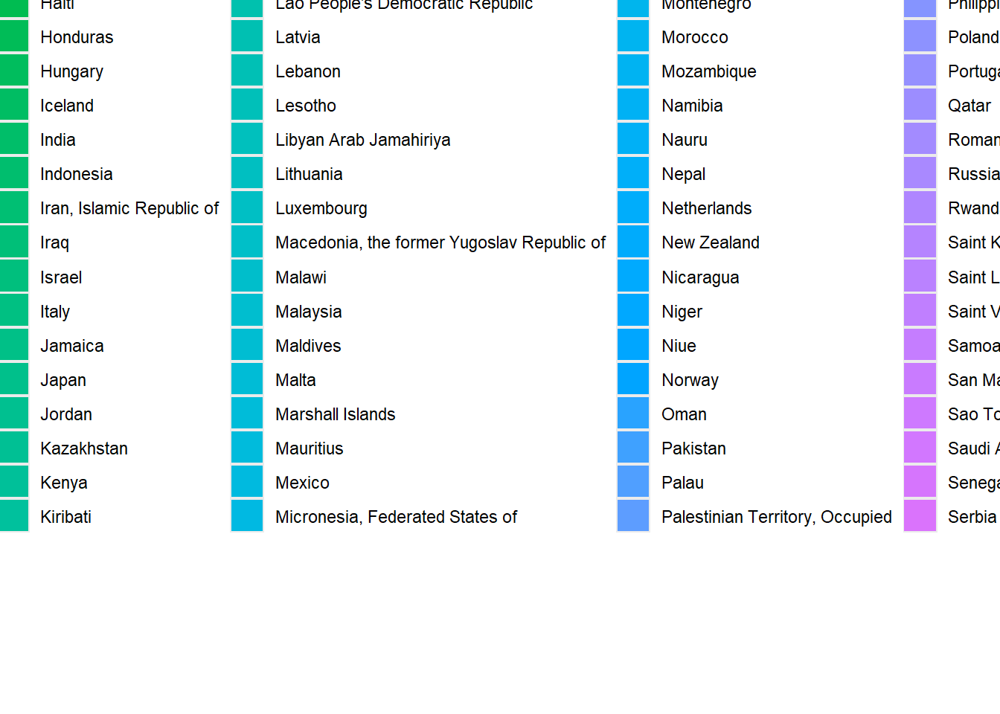

library(ggplot2)
data <- read.csv('Measles.csv')
data_2018 <- subset(data, time_period == 2018)
ggplot(data_2018, aes(x=reorder(country, -obs_value), y=obs_value, fill=country)) +
geom_bar(stat="identity") +
labs(title="Measles Vaccination Coverage by Country in 2018", x="Country", y="Coverage (%)") +
theme(axis.text.x = element_text(angle = 90, hjust = 1))